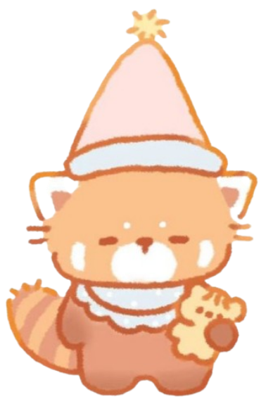
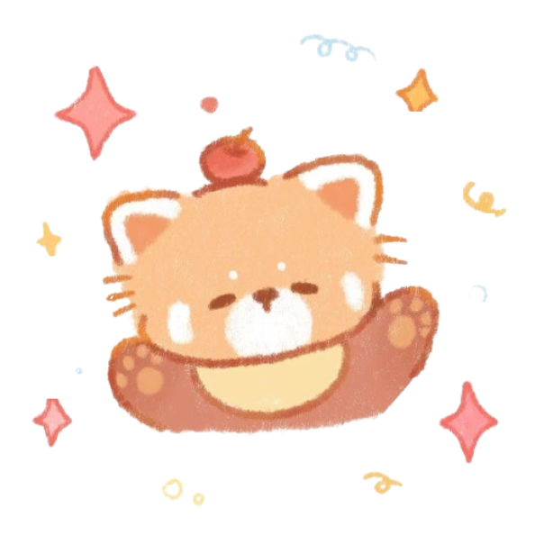

Strona Główna
Informacje
Filmik
Kosmos
Okienko
Zdjęcia
Pandy – Skarby Górskich Lasów
Czerwone pandy to niewielkie ssaki, które zamieszkują górskie lasy Azji Południowej i Wschodniej. Są zwierzętami nocnymi i nadrzewnymi, co sprawia, że spędzają większość czasu w koronach drzew. Ich charakterystyczny, rudoczerwony futrzany ogon pełni funkcję równoważącą podczas wspinaczki oraz chroni przed zimnem. Czerwone pandy żywią się głównie bambusem, choć uzupełniają dietę owocami, jagodami, a czasami małymi ssakami lub ptakami.
Pomimo swojego uroku, czerwone pandy są gatunkiem zagrożonym, głównie z powodu wylesiania i utraty naturalnego środowiska. Populacje dzikich pand są fragmentaryczne, a różnorodność genetyczna maleje. Organizacje ochrony przyrody wprowadzają programy hodowlane i projekty reintrodukcji, aby zwiększyć szanse przetrwania tego gatunku.
Czerwone pandy wykazują różnorodne zachowania społeczne – choć są samotnikami, komunikują się poprzez wokalizacje i zapachy wydzielane z gruczołów znajdujących się przy odbycie.
Poruszają się z dużą zwinnością, wspinając się po drzewach i przeskakując z gałęzi na gałąź. Ich gęste futro chroni je przed chłodem, a zwinne łapki umożliwiają trzymanie się cienkich konarów.
Badania nad czerwonymi pandami pokazują, że potrafią one rozróżniać różne rodzaje pokarmu i wykazują zdolności adaptacyjne w środowisku górskim. W warunkach hodowli wykazują ciekawość i inteligencję, często bawiąc się różnymi przedmiotami. Obserwacje w ogrodach zoologicznych i rezerwatach podkreślają, że odpowiednie środowisko i dieta są kluczowe dla ich zdrowia i dobrostanu.
Czerwone pandy mają także znaczenie kulturowe – w regionach, w których występują, są symbolem lasów i przyrody. W wielu miejscach stały się ikoną działań edukacyjnych i ekologicznych, przyciągając uwagę turystów i miłośników zwierząt. Zachowanie ich populacji w naturze wymaga współpracy międzynarodowej, ochrony siedlisk oraz edukacji społecznej.
 Ich wygląd, zwłaszcza maska na twarzy przypominająca pandę wielką, oraz długi, pierzasty ogon, sprawiają, że czerwone pandy są jednym z najbardziej rozpoznawalnych i lubianych gatunków. Pomimo zagrożeń, ich zdolność adaptacji i wsparcie człowieka dają nadzieję na przyszłość tego wyjątkowego zwierzęcia. Czerwone pandy przypominają nam, jak kruche i cenne są dzikie ekosystemy. Ich ochrona to nie tylko troska o gatunek, lecz także o przyszłość lasów, w których żyją. Każda obserwacja czerwonej pandy w jej naturalnym środowisku jest cennym przypomnieniem, jak ważna jest ochrona przyrody.
Ich wygląd, zwłaszcza maska na twarzy przypominająca pandę wielką, oraz długi, pierzasty ogon, sprawiają, że czerwone pandy są jednym z najbardziej rozpoznawalnych i lubianych gatunków. Pomimo zagrożeń, ich zdolność adaptacji i wsparcie człowieka dają nadzieję na przyszłość tego wyjątkowego zwierzęcia. Czerwone pandy przypominają nam, jak kruche i cenne są dzikie ekosystemy. Ich ochrona to nie tylko troska o gatunek, lecz także o przyszłość lasów, w których żyją. Każda obserwacja czerwonej pandy w jej naturalnym środowisku jest cennym przypomnieniem, jak ważna jest ochrona przyrody.